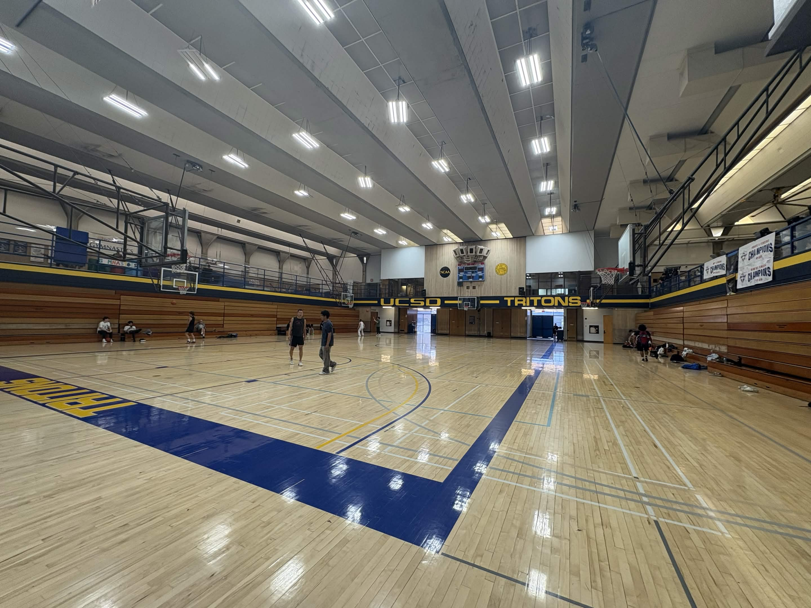

UCSD students who use campus courts, such as basketball and badminton courts, do not have a reliable way to know how crowded the courts are before arriving. Because of this, students may spend time walking to the courts only to find that there is no space to play. They may also miss opportunities to play when courts are actually open.
Our team chose this problem because court availability is something many students deal with in everyday campus life. Current options, such as checking recreation hours or reserving certain courts, do not provide live information about how crowded the courts are. We wanted to build a system that makes shared campus spaces easier to use.

Right amount of people